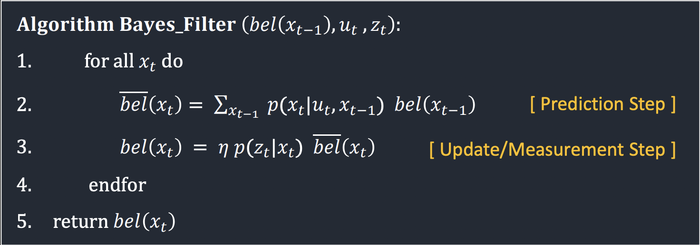
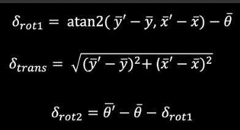

Objective
In lab 10, I used a Bayes Filter to implement grid localization. Previously, we saw that only using odometry data would result in inaccuracy in estimating the robot's location. Thus, this allowed for us to use a probabilistic method for localization.
Prelab
In the prelab, we reviewed the Bayes filter and looked at the terminology for the lab.
Grid Localization
The robot's state is represented by a 3D array of (x, y, theta). Due to us using tiles that are 1ftx1ft in real life, the calculations use imperial units to make our lives easier. :)
Since there are an infinite number of locations where the robot could be within any given space, the map is discretized into a 3D grid space. The size of each grid cell is (0.3048, 0.3048, 20) and the total number of cells along each axis are (12,9,18). Each grid stores the probability that the robot is in that cell. All of these probabilities sum to 1 and are updated in real-time as the robot runs. The cell with the highest probability represents the estimated pose of the robot.
The Bayes filter algorithm is shown below:
Implementation
In this lab, the robot drove around in simulation according to a set path and collected both odometry and distance data. I had to implement a series of functions to get the Bayes filter working.
compute_control
Since that is given the previous and current odometry poses, I need to extract the control information, u, for the filter. This function does just that. The implementation was based on the following equations from lecture:
Thus, the code looks like the following:
odom_motion_model
In this function, I calculated the probability of the state transition, or the probability that that the robot has reached a position given the previous position and the control inputs (P(x' | x, u) from the algorithm). This is used in the prediction step of the filter. This is calculated using a gaussian distribution of the robot's expected movement and the previous position.
The implementation looks like the following:
predicion_step
This function uses all of the calculations that were previously done in the other functions and combines them to predict where the robot is based on its control. The function loops through each possible state (every x, y, and theta) and calculate the likelihood (bel_bar) of being in this state. For efficiency, a threshold is added to ignore the locations that the robot is extremely unlikely to be at. This value was chosen to be 0.0001.
sensor_model
As stated in the function description, this function calculates the probability that the robot would have receieved the current sensor information based on the current pose, or p(z|x). This has 18 potential probabilities because this is the number of different values that the robot measures distance at.
update_step
This is the final step of the Bayes filter. In this step, the sensor model is used to update the prediction. This function returns the belief of the robot for each of the cells based on the past sensor measurements by looping through all possible positions and comparing the known measurements to the actual current measurement from the sensor. The update is then done by multiplying P(z|x) by the predicted belief bel_bar found during the previous prediction step.
Results
The results of the Bayes filter can be seen below. Note that due to both recording and running the simulation at the same time, the robot's trajectory was slightly altered and it bumped into a few walls.
The robot's true pose is shown in green, the odometry readings are in red, and the blue is the Bayes estimation. As expected, the Bayes estimation is much closer to the actual pose. There are moments where the estimated pose greatly deviates from the actual pose, but the robot is able to correct on the next time step. These large deviations may be a result of wildly different odometry data or slight deviations in position while rotating due to the lag and bumping into walls.